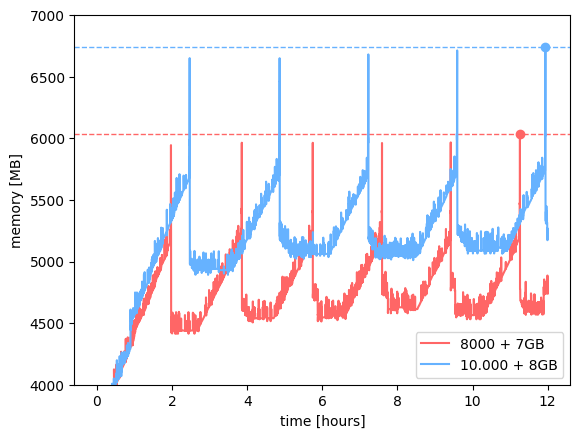

Code Usage Questions
Welcome to the code usage FAQ for POSYDON. This section is designed to answer questions related to how to use various features and functionalities of POSYDON. If your question isn’t addressed here, consider reaching out to our support channels or checking our general FAQ.
Frequently Asked Questions
- How do I start a basic population synthesis simulation with POSYDON?
Answer: Start with the binary population synthesis guide to learn how to run POSYDON.
I’m getting an error when using the
whereparameter in theselectfunctionIf you’re trying to select based on values in an unsupported column, you’ll receive an error message like below. Only specific columns are supported for selection. These are limited to string columns, the indices, and the column names. Please perform the selection in-memory instead.
population.history.select('S1_mass > 10')
The above code will produce the following error: .. code-block:: python
- ValueError: The passed where expression: S1_mass > 10
contains an invalid variable reference all of the variable references must be a reference to an axis (e.g. ‘index’ or ‘columns’), or a data_column The currently defined references are: index,columns,state,event,step_names,S1_state,S2_state
How should I tune my memory usage for a population synthesis run?
A population run requires at a bare minimum of 4GB of memory per CPU. However, this restricts the number of binaries you can keep in memory and requires a
dump_rate < 1000to keep the memory usage low, which slows down the simulation.As such, 5GB per CPU is a better starting point. This allows you to keep more binaries in memory and increases the speed of the population synthesis run. The figure below can be used to fine-tune your memory usage. It shows the memory usage of two large population synthesis runs with a 7GB and a 8GB limit with a
dump_rateof 8000 and 10.000 binaries respectively.The memory usage of the 8000
dump_raterun is stable at around 6GB, while the 10.000dump_raterun is stable at around 6.8GB.What should the walltime and job array size be for my population synthesis run?
The
walltime`and job array size are dependent on the number of binaries you want to simulate and the memory usage of the simulation. The job array size should be set such that the number of binaries per job is at least 1000, since there’s a minimum overhead per job due to loading the grids.The
walltimedepends on the number of binaries per job, where each binary takes about 1-2 seconds to run. For example, with 100.000 binaries split over 100 jobs (per metallicity), which means that every job runs 1.000 binaries. This will take around 33 minutes per job. So awalltimeof 00:45:00 is reasonable.The balance between
walltimeand the size of the job array is important. If thewalltimeis too long, it might be worth increasing the job array size to decrease the time per job and allow the population synthesis to finish faster. But if thewalltimeis too short, the job array size should be decreased, since each job has an initial overhead that is not dependent on the number of binaries in the job.Note
The processing time increases if you make the dump_rate too low due to many I/O operations.
I am unable to open HDF5 files created by POSYDON. What should I do?
If you’re on a Mac, there might be an issue with the HDF5 installation. Make sure you have the hdf5 and pytables packages installed through conda in your environment with conda install hdf5 pytables before running POSYDON! Although they are dependencies of POSYDON, sometimes they’re not installed correctly on Mac.
- Are there any examples or tutorials available?
Answer: Yes, you can check our roadmap for tutorials related to different POSYDON components, including population synthesis, creating core datasets, and running your own MESA grids with POSYDON.
- Can I run POSYDON on an HPC facility?
Answer: Absolutely! Refer to our HPC guide for detailed instructions on running POSYDON in an HPC environment.
- Help, I’m stuck! Where can I get support?
Please check our email group if your question hasn’t been answered yet.
Otherwise, please email us at posydon-users [at] googlegroups.com
- How can I stay updated with the latest features and updates?
Answer: You can regularly visit our official website for news and updates.
I’ve come across a FAILED binary. What does this mean? - Answer: A FAILED binary is one that has encountered an error during the simulation due to the default flow and steps of POSYDON being unable to evolve them. This can be due to a variety of reasons, for example:
The evolutionary state of the binary is not represented in the currently supported stellar evolution grids.
For example, we do not have a grid for Roche lobe overflow between two helium stars. - The binary has masses outside the grid range. For example, the HMS-HMS grid does not contain binaries with a secondary mass below 0.5. - The binary could not be matched to single star or a binary due to a too large matching error.
{kind=link}
What approximations does POSYDON make? This is a complex question and the best location to look at would be the POSYDON papers: Fragos et al. (2022) and Andrews et al. (submitted).
Additional Resources
User Guide: For detailed instructions on all features of POSYDON, visit our comprehensive roadmap.
API Reference: Dive deep into the functionality provided by POSYDON with our API Reference.
Examples and Tutorials: Learn by doing! Visit our roadmap page for hands-on learning.
Still Have Questions?
If your query remains unanswered, we’re here to help! Reach out to our community through the support channels or consider checking our general installation FAQ for non-usage related questions.
Your feedback helps us improve. If you think a common question should be added here, don’t hesitate to suggest it!